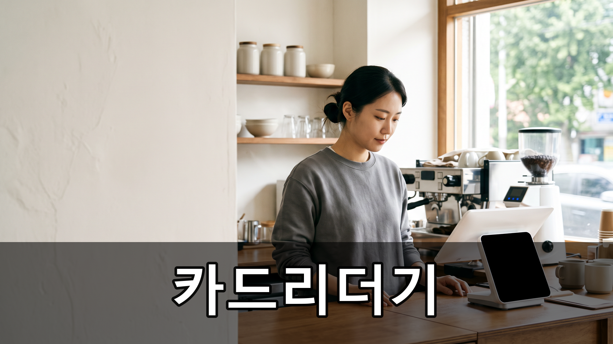
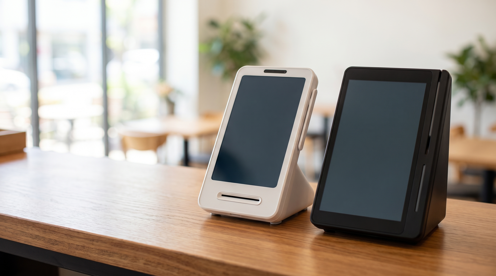

신용카드리더기, 카운터에 뭘 놓을지 가르는 기준 3가지 — 토스단말기 네이버단말기 비교
카운터 위에 자리는 하나인데 후보는 여러 개입니다. 어느 쪽이 낫냐고 물으시면 답이 갈리는 이유가 있습니다. 오늘은 성능 비교가 아니라 우리 매장 쪽에서 먼저 정해야 할 기준을 정리했습니다.
결론부터 말씀드리면, 신용카드리더기 선택은 기기 성능이 아니라 매장의 자리·동선·결제수단에서 갈립니다.
- 카운터에서 쓸 수 있는 자리 폭부터 잽니다
포장 봉투와 컵, 영수증 뭉치가 올라가는 자리에서 실제로 비는 폭이 얼마인지 재 보세요. 이 한 가지로 후보가 절반은 걸러집니다.
- 손님이 카드를 내미는 위치를 봅니다
카운터 앞에 서서 내미는 매장과, 테이블에 앉은 채 건네는 매장은 필요한 기기가 다릅니다. 후자는 손에 들고 움직일 수 있는 쪽이 편합니다.
- 우리 손님이 실제로 쓰는 결제수단을 셉니다
일주일만 세어 보시면 카드와 간편결제 비중이 눈에 보입니다. 휴대폰을 내미는 손님이 많은 상권이면 간편결제 대응 범위가 넓은 쪽이 줄을 덜 세웁니다.
- 홀을 돌아다니며 받는 매장인지 확인합니다
자리에서 계산이 끝나야 하는 업종이면 무선 여부가 가장 중요한 기준이 됩니다. 반대로 카운터 고정이면 유선이 더 안정적인 경우도 많습니다.
- 영수증을 얼마나 자주 뽑는지도 기준입니다
출력이 잦은 매장은 용지 교체가 쉬운 구조인지, 용지 규격이 흔한 것인지를 같이 보셔야 합니다. 이게 매일의 손이 갑니다.
- 지금 매장의 인터넷 환경을 확인합니다
공유기 위치가 카운터에서 멀거나 벽이 두꺼우면 무선이 오히려 불안정합니다. 설치 전에 신호가 닿는지부터 보는 편이 안전합니다.

위 1~3번을 정하고 나서 기기를 고르면 선택이 훨씬 단순해집니다. 자리가 좁고 간편결제 손님이 많은 매장이라면 토스단말기가, 네이버 예약·주문을 함께 쓰는 매장이라면 네이버단말기가 후보에 자주 오릅니다. 정품 신제품 보증 · 수도권 직영 설치를 원칙으로, 매장 조건을 알려 주시면 맞는 쪽을 함께 봐 드립니다.
기기부터 고르면 매번 헤매지만, 매장 조건부터 정하면 한 번에 끝납니다. 카운터 폭과 손님 동선만 알려 주셔도 후보를 좁혀 드릴 수 있습니다.
- 📞 전화상담 1544-7754
- 🌐 홈페이지 https://nwpos.co.kr

📷 인스타그램 팔로우 https://www.instagram.com/nurinetworkspos

▶️ 유튜브 구독 https://www.youtube.com/@nurinetworks
(2026년 8월 기준)